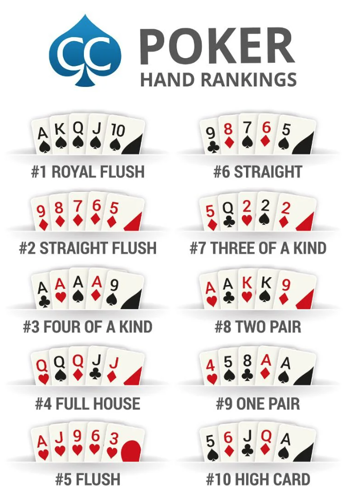

suits <- c("Diamonds", "Clubs", "Hearts", "Spades")
suits[1] "Diamonds" "Clubs" "Hearts" "Spades" DSAN Bootcamp 2024
Create a vector for card suits with the variable name suits, containing the following four elements (as character strings): "Diamonds", "Clubs", "Hearts", "Spades". Write suits (on its own) as the final line of your code cell, so that the output of the cell shows the contents of the vector you created.
Solution:
suits <- c("Diamonds", "Clubs", "Hearts", "Spades")
suits[1] "Diamonds" "Clubs" "Hearts" "Spades" Create a vector for card numbers with the variable name numbers, containing the character string "Ace" followed by the integers 2 through 10. Display the contents of numbers as the output of your code cell (as you did in Q1.1).
Solution:
numbers <- c("Ace", seq(2, 10))
numbers [1] "Ace" "2" "3" "4" "5" "6" "7" "8" "9" "10" Create a vector for face cards with the variable name faces, containing the character strings "Jack", "Queen", and "King". Display the contents of faces as the output of your code cell.
Solution:
faces <- c("Jack", "Queen", "King")
faces[1] "Jack" "Queen" "King" Create a new vector with the variable name card_names, formed by concatenating the elements of the faces vector to the end of the numbers vector. Display the contents of card_names as the output of your code cell.
Solution:
card_names <- c(numbers, faces)
card_names [1] "Ace" "2" "3" "4" "5" "6" "7" "8" "9"
[10] "10" "Jack" "Queen" "King" Repeat each element in card_names four times, and name the new variable card_names_4. Display the contents of card_names_4 as the output of your code cell.
Solution:
card_names_4 <- rep(card_names, 4)
card_names_4 [1] "Ace" "2" "3" "4" "5" "6" "7" "8" "9"
[10] "10" "Jack" "Queen" "King" "Ace" "2" "3" "4" "5"
[19] "6" "7" "8" "9" "10" "Jack" "Queen" "King" "Ace"
[28] "2" "3" "4" "5" "6" "7" "8" "9" "10"
[37] "Jack" "Queen" "King" "Ace" "2" "3" "4" "5" "6"
[46] "7" "8" "9" "10" "Jack" "Queen" "King" Repeat each element in suits 13 times, naming the new variable suits_13. Display the contents of suits_13 as the output of your code cell.
Solution:
suits_13 <- rep(suits, 13)
suits_13 [1] "Diamonds" "Clubs" "Hearts" "Spades" "Diamonds" "Clubs"
[7] "Hearts" "Spades" "Diamonds" "Clubs" "Hearts" "Spades"
[13] "Diamonds" "Clubs" "Hearts" "Spades" "Diamonds" "Clubs"
[19] "Hearts" "Spades" "Diamonds" "Clubs" "Hearts" "Spades"
[25] "Diamonds" "Clubs" "Hearts" "Spades" "Diamonds" "Clubs"
[31] "Hearts" "Spades" "Diamonds" "Clubs" "Hearts" "Spades"
[37] "Diamonds" "Clubs" "Hearts" "Spades" "Diamonds" "Clubs"
[43] "Hearts" "Spades" "Diamonds" "Clubs" "Hearts" "Spades"
[49] "Diamonds" "Clubs" "Hearts" "Spades" Create a data.frame variable named card_deck, constructed so that its first column is named card_name and contains the values of card_names_4, and its second column is named suit and contains the values of suits_13. Display the contents of card_deck as the output of your code cell.
Solution:
card_deck <- data.frame(
card_name=card_names_4,
suit=suits_13
)
card_deck card_name suit
1 Ace Diamonds
2 2 Clubs
3 3 Hearts
4 4 Spades
5 5 Diamonds
6 6 Clubs
7 7 Hearts
8 8 Spades
9 9 Diamonds
10 10 Clubs
11 Jack Hearts
12 Queen Spades
13 King Diamonds
14 Ace Clubs
15 2 Hearts
16 3 Spades
17 4 Diamonds
18 5 Clubs
19 6 Hearts
20 7 Spades
21 8 Diamonds
22 9 Clubs
23 10 Hearts
24 Jack Spades
25 Queen Diamonds
26 King Clubs
27 Ace Hearts
28 2 Spades
29 3 Diamonds
30 4 Clubs
31 5 Hearts
32 6 Spades
33 7 Diamonds
34 8 Clubs
35 9 Hearts
36 10 Spades
37 Jack Diamonds
38 Queen Clubs
39 King Hearts
40 Ace Spades
41 2 Diamonds
42 3 Clubs
43 4 Hearts
44 5 Spades
45 6 Diamonds
46 7 Clubs
47 8 Hearts
48 9 Spades
49 10 Diamonds
50 Jack Clubs
51 Queen Hearts
52 King SpadesCreate a new column in card_deck named card by pasting the values in the first column (card_name) to the values in the second column (suit). Here you can use the built-in R function paste() to paste these 2 variables together. Display the new contents of card_deck as the output of your code cell.
Solution:
card_deck[,"card"] <- paste(card_deck$card_name, card_deck$suit)
card_deck card_name suit card
1 Ace Diamonds Ace Diamonds
2 2 Clubs 2 Clubs
3 3 Hearts 3 Hearts
4 4 Spades 4 Spades
5 5 Diamonds 5 Diamonds
6 6 Clubs 6 Clubs
7 7 Hearts 7 Hearts
8 8 Spades 8 Spades
9 9 Diamonds 9 Diamonds
10 10 Clubs 10 Clubs
11 Jack Hearts Jack Hearts
12 Queen Spades Queen Spades
13 King Diamonds King Diamonds
14 Ace Clubs Ace Clubs
15 2 Hearts 2 Hearts
16 3 Spades 3 Spades
17 4 Diamonds 4 Diamonds
18 5 Clubs 5 Clubs
19 6 Hearts 6 Hearts
20 7 Spades 7 Spades
21 8 Diamonds 8 Diamonds
22 9 Clubs 9 Clubs
23 10 Hearts 10 Hearts
24 Jack Spades Jack Spades
25 Queen Diamonds Queen Diamonds
26 King Clubs King Clubs
27 Ace Hearts Ace Hearts
28 2 Spades 2 Spades
29 3 Diamonds 3 Diamonds
30 4 Clubs 4 Clubs
31 5 Hearts 5 Hearts
32 6 Spades 6 Spades
33 7 Diamonds 7 Diamonds
34 8 Clubs 8 Clubs
35 9 Hearts 9 Hearts
36 10 Spades 10 Spades
37 Jack Diamonds Jack Diamonds
38 Queen Clubs Queen Clubs
39 King Hearts King Hearts
40 Ace Spades Ace Spades
41 2 Diamonds 2 Diamonds
42 3 Clubs 3 Clubs
43 4 Hearts 4 Hearts
44 5 Spades 5 Spades
45 6 Diamonds 6 Diamonds
46 7 Clubs 7 Clubs
47 8 Hearts 8 Hearts
48 9 Spades 9 Spades
49 10 Diamonds 10 Diamonds
50 Jack Clubs Jack Clubs
51 Queen Hearts Queen Hearts
52 King Spades King SpadesNow you have a deck of cards, which you can use to compute probabilities! First, to verify that the deck was successfully created, write code which outputs the number of rows in the card_deck data.frame (it should be 52, if the above steps were carried out correctly).
Solution:
nrow(card_deck)[1] 52Now, use what you know about filtering the values in a data.frame to compute the probability that a randomly-drawn card from card_deck is a Spade, and display this probability as the output of your code cell.
Solution:
spade_cards <- card_deck[card_deck$suit == "Spades",]
p_spade <- nrow(spade_cards) / nrow(card_deck)
p_spade[1] 0.25Use card_deck again to compute the probability that, when drawing two cards from the deck, the first is a Spade and the second is a Heart. Display this probability as the output of your code cell.
Solution:
# A few ways to do this, but here's one
card_deck_post_spade <- card_deck[card_deck$card != "Ace Spades",]
hearts_post_spade <- card_deck_post_spade[card_deck_post_spade$suit == "Hearts",]
p_heart_after_spade <- nrow(hearts_post_spade) / nrow(card_deck_post_spade)
p_spade_heart <- p_spade * p_heart_after_spade
p_spade_heart[1] 0.06372549Now let’s simulate playing poker! Using what you know about sampling from a data.frame, sample 5 cards from card_deck (please use set.seed(2024) to set the random seed to be 2024, so that results are the same across different submissions). Display the sampled 5-card hand as the output of your code cell. Then, using the following image as a guide if you’re unfamiliar with poker, comment on the cards you obtained—did your random draw result in one of the types of hands displayed in the image?

Solution:
set.seed(2024)
indices <- sample(nrow(card_deck), 5)
sampled_cards <- card_deck[indices,]
sampled_cards card_name suit card
2 2 Clubs 2 Clubs
37 Jack Diamonds Jack Diamonds
45 6 Diamonds 6 Diamonds
17 4 Diamonds 4 Diamonds
50 Jack Clubs Jack ClubsUsing the rankings from the image, we have the following (from “best” to “worst”):
For this problem, rather than creating our own dataset from scratch, we will load and analyze a pre-existing dataset on global superstore orders.
Global_Superstore_Orders_2016.csv using R’s built-in read.csv() function, storing the result into a data.frame variable named orders.read.csv() function by typing ??read.csv in the R Console. Make sure you understand the optional header argument, since you’ll need to provide the TRUE as the value for this argument when you call the read.csv() function in the previous step!orders as the output of your code cell, by using R’s built-in head() function.Solution:
orders <- read.csv("Global_Superstore_Orders_2016.csv", header=TRUE)
head(orders) Row.ID Order.ID Order.Date Ship.Date Ship.Mode Customer.ID
1 32298 CA-2012-124891 7/31/2012 7/31/2012 Same Day RH-19495
2 26341 IN-2013-77878 2/5/2013 2/7/2013 Second Class JR-16210
3 25330 IN-2013-71249 10/17/2013 10/18/2013 First Class CR-12730
4 13524 ES-2013-1579342 1/28/2013 1/30/2013 First Class KM-16375
5 47221 SG-2013-4320 11/5/2013 11/6/2013 Same Day RH-9495
6 22732 IN-2013-42360 6/28/2013 7/1/2013 Second Class JM-15655
Customer.Name Segment City State Country
1 Rick Hansen Consumer New York City New York United States
2 Justin Ritter Corporate Wollongong New South Wales Australia
3 Craig Reiter Consumer Brisbane Queensland Australia
4 Katherine Murray Home Office Berlin Berlin Germany
5 Rick Hansen Consumer Dakar Dakar Senegal
6 Jim Mitchum Corporate Sydney New South Wales Australia
Postal.Code Market Region Product.ID Category Sub.Category
1 10024 US East TEC-AC-10003033 Technology Accessories
2 NA APAC Oceania FUR-CH-10003950 Furniture Chairs
3 NA APAC Oceania TEC-PH-10004664 Technology Phones
4 NA EU Central TEC-PH-10004583 Technology Phones
5 NA Africa Africa TEC-SHA-10000501 Technology Copiers
6 NA APAC Oceania TEC-PH-10000030 Technology Phones
Product.Name Sales
1 Plantronics CS510 - Over-the-Head monaural Wireless Headset System 2309.650
2 Novimex Executive Leather Armchair, Black 3709.395
3 Nokia Smart Phone, with Caller ID 5175.171
4 Motorola Smart Phone, Cordless 2892.510
5 Sharp Wireless Fax, High-Speed 2832.960
6 Samsung Smart Phone, with Caller ID 2862.675
Quantity Discount Profit Shipping.Cost Order.Priority
1 7 0.0 762.1845 933.57 Critical
2 9 0.1 -288.7650 923.63 Critical
3 9 0.1 919.9710 915.49 Medium
4 5 0.1 -96.5400 910.16 Medium
5 8 0.0 311.5200 903.04 Critical
6 5 0.1 763.2750 897.35 CriticalUse str() to check the type of each variable. You’ll see that read.csv() did not correctly identify the data types for all columns loaded from the .csv file. Which variables have inappropriate types, and what should their data types be instead?
Solution:
str(orders)'data.frame': 51290 obs. of 24 variables:
$ Row.ID : int 32298 26341 25330 13524 47221 22732 30570 31192 40155 40936 ...
$ Order.ID : chr "CA-2012-124891" "IN-2013-77878" "IN-2013-71249" "ES-2013-1579342" ...
$ Order.Date : chr "7/31/2012" "2/5/2013" "10/17/2013" "1/28/2013" ...
$ Ship.Date : chr "7/31/2012" "2/7/2013" "10/18/2013" "1/30/2013" ...
$ Ship.Mode : chr "Same Day" "Second Class" "First Class" "First Class" ...
$ Customer.ID : chr "RH-19495" "JR-16210" "CR-12730" "KM-16375" ...
$ Customer.Name : chr "Rick Hansen" "Justin Ritter" "Craig Reiter" "Katherine Murray" ...
$ Segment : chr "Consumer" "Corporate" "Consumer" "Home Office" ...
$ City : chr "New York City" "Wollongong" "Brisbane" "Berlin" ...
$ State : chr "New York" "New South Wales" "Queensland" "Berlin" ...
$ Country : chr "United States" "Australia" "Australia" "Germany" ...
$ Postal.Code : int 10024 NA NA NA NA NA NA NA 95823 28027 ...
$ Market : chr "US" "APAC" "APAC" "EU" ...
$ Region : chr "East" "Oceania" "Oceania" "Central" ...
$ Product.ID : chr "TEC-AC-10003033" "FUR-CH-10003950" "TEC-PH-10004664" "TEC-PH-10004583" ...
$ Category : chr "Technology" "Furniture" "Technology" "Technology" ...
$ Sub.Category : chr "Accessories" "Chairs" "Phones" "Phones" ...
$ Product.Name : chr "Plantronics CS510 - Over-the-Head monaural Wireless Headset System" "Novimex Executive Leather Armchair, Black" "Nokia Smart Phone, with Caller ID" "Motorola Smart Phone, Cordless" ...
$ Sales : num 2310 3709 5175 2893 2833 ...
$ Quantity : int 7 9 9 5 8 5 4 6 5 13 ...
$ Discount : num 0 0.1 0.1 0.1 0 0.1 0 0 0.2 0.4 ...
$ Profit : num 762.2 -288.8 920 -96.5 311.5 ...
$ Shipping.Cost : num 934 924 915 910 903 ...
$ Order.Priority: chr "Critical" "Critical" "Medium" "Medium" ...Order.Date: Should be Date instead of characterShip.Date: Should be Date instead of characterOrder.Priority: Should be factor instead of characterCreate a separate data.frame named sales_data, containing only the following columns from orders: Order.Date, Ship.Date, State, Country, Sales, Profit, and Order.Priority. Display the first six rows of sales_data (using head()) as the output of your code cell.
Solution:
sales_data <- orders[c("Order.Date","Ship.Date","State","Country","Sales","Profit","Order.Priority")]
head(sales_data) Order.Date Ship.Date State Country Sales Profit
1 7/31/2012 7/31/2012 New York United States 2309.650 762.1845
2 2/5/2013 2/7/2013 New South Wales Australia 3709.395 -288.7650
3 10/17/2013 10/18/2013 Queensland Australia 5175.171 919.9710
4 1/28/2013 1/30/2013 Berlin Germany 2892.510 -96.5400
5 11/5/2013 11/6/2013 Dakar Senegal 2832.960 311.5200
6 6/28/2013 7/1/2013 New South Wales Australia 2862.675 763.2750
Order.Priority
1 Critical
2 Critical
3 Medium
4 Medium
5 Critical
6 CriticalUpdate the sales_data data.frame you created in Q2.3 so that the columns you identified in Q2.2 have the correct types (factor, Date, etc.).
Hint: To convert to the Date type, you’ll need to identify what format the dates are in, then use the appropriate function from the Parse Date-Times section of the lubridate cheat sheet. The following cell provides an example, where we parse the character string "2024-05-01" into a Date object representing the 31st day of December in the year 2024:
library(lubridate)
Attaching package: 'lubridate'The following objects are masked from 'package:base':
date, intersect, setdiff, unionexample_date_str <- "2024-12-31"
parsed_date <- ymd(example_date_str)
parsed_date[1] "2024-12-31"class(parsed_date)[1] "Date"Solution:
library(lubridate)
sales_data['Order.Date'] <- mdy(sales_data$Order.Date)
sales_data['Ship.Date'] <- mdy(sales_data$Ship.Date)
sales_data['Order.Priority'] <- factor(
sales_data$Order.Priority,
levels=c("Low", "Medium", "High", "Critical")
)
str(sales_data)'data.frame': 51290 obs. of 7 variables:
$ Order.Date : Date, format: "2012-07-31" "2013-02-05" ...
$ Ship.Date : Date, format: "2012-07-31" "2013-02-07" ...
$ State : chr "New York" "New South Wales" "Queensland" "Berlin" ...
$ Country : chr "United States" "Australia" "Australia" "Germany" ...
$ Sales : num 2310 3709 5175 2893 2833 ...
$ Profit : num 762.2 -288.8 920 -96.5 311.5 ...
$ Order.Priority: Factor w/ 4 levels "Low","Medium",..: 4 4 2 2 4 4 4 3 1 4 ...Use str() on the updated sales_data variable to confirm that each of the variables you identified in Q2.2 now has the correct type.
Solution:
str(sales_data)'data.frame': 51290 obs. of 7 variables:
$ Order.Date : Date, format: "2012-07-31" "2013-02-05" ...
$ Ship.Date : Date, format: "2012-07-31" "2013-02-07" ...
$ State : chr "New York" "New South Wales" "Queensland" "Berlin" ...
$ Country : chr "United States" "Australia" "Australia" "Germany" ...
$ Sales : num 2310 3709 5175 2893 2833 ...
$ Profit : num 762.2 -288.8 920 -96.5 311.5 ...
$ Order.Priority: Factor w/ 4 levels "Low","Medium",..: 4 4 2 2 4 4 4 3 1 4 ...Check whether there are any NA/missing values in sales_data.
summary(sales_data) Order.Date Ship.Date State
Min. :2011-01-01 Min. :2011-01-03 Length:51290
1st Qu.:2012-06-19 1st Qu.:2012-06-23 Class :character
Median :2013-07-08 Median :2013-07-12 Mode :character
Mean :2013-05-11 Mean :2013-05-15
3rd Qu.:2014-05-22 3rd Qu.:2014-05-26
Max. :2014-12-31 Max. :2015-01-07
Country Sales Profit Order.Priority
Length:51290 Min. : 0.444 Min. :-6599.98 Low : 2424
Class :character 1st Qu.: 30.759 1st Qu.: 0.00 Medium :29433
Mode :character Median : 85.053 Median : 9.24 High :15501
Mean : 246.491 Mean : 28.61 Critical: 3932
3rd Qu.: 251.053 3rd Qu.: 36.81
Max. :22638.480 Max. : 8399.98 sales_data[sales_data$State == "",][1] Order.Date Ship.Date State Country Sales
[6] Profit Order.Priority
<0 rows> (or 0-length row.names)sales_data[sales_data$Country == "",][1] Order.Date Ship.Date State Country Sales
[6] Profit Order.Priority
<0 rows> (or 0-length row.names)The summary() function displays the number of NA values for numeric columns, so we see that there are no NA values in these columns. Then, for the two character columns, we manually checked whether there are any empty-string values, and found that there are none!
Store the names of the columns of sales_data into a new variable called sales_col_names. Also find out how many rows that the dataset has and assign it to the variable sales_num_rows. Display the values of both sales_col_names and sales_num_rows as the output of your code cell. (We may use this dataset and these variables in future assignments)
Solution:
sales_col_names <- colnames(sales_data)
sales_num_rows <- nrow(sales_data)
c(paste0(sales_col_names, collapse=", "), sales_num_rows)[1] "Order.Date, Ship.Date, State, Country, Sales, Profit, Order.Priority"
[2] "51290" Write code to compute the mean value of the Sales column when the order priority is "Critical", and the mean value of Sales when the order priority is "High". Which of the two mean values is greater?
Solution:
critical_orders <- sales_data[sales_data$Order.Priority == "Critical",]
mean(critical_orders$Sales)[1] 250.8229high_orders <- sales_data[sales_data$Order.Priority == "High",]
mean(high_orders$Sales)[1] 245.6324The mean value for the "Critical" orders is greater.
(For +1 bonus point) Compute the mean sales for each of the 50 US states.
Hint: you should use R’s built-in aggregate() function to accomplish this, rather than manually entering the names of all 50 states!
Solution:
# Several ways to use aggregate(), this is the version using formulas
us_sales <- sales_data[sales_data$Country == "United States",]
aggregate(Sales ~ State, data=us_sales, mean) State Sales
1 Alabama 319.8466
2 Arizona 157.5089
3 Arkansas 194.6355
4 California 228.7295
5 Colorado 176.4182
6 Connecticut 163.2239
7 Delaware 285.9486
8 District of Columbia 286.5020
9 Florida 233.6128
10 Georgia 266.8252
11 Idaho 208.6898
12 Illinois 162.9392
13 Indiana 359.4319
14 Iowa 152.6587
15 Kansas 121.4296
16 Kentucky 263.2500
17 Louisiana 219.4531
18 Maine 158.8162
19 Maryland 225.7669
20 Massachusetts 212.1069
21 Michigan 299.0965
22 Minnesota 335.5410
23 Mississippi 203.2328
24 Missouri 336.4417
25 Montana 372.6235
26 Nebraska 196.4455
27 Nevada 428.9513
28 New Hampshire 270.0935
29 New Jersey 275.1101
30 New Mexico 129.2844
31 New York 275.5995
32 North Carolina 223.3059
33 North Dakota 131.4157
34 Ohio 166.8617
35 Oklahoma 298.2332
36 Oregon 140.5738
37 Pennsylvania 198.4871
38 Rhode Island 404.0706
39 South Carolina 201.9455
40 South Dakota 109.6300
41 Tennessee 167.5512
42 Texas 172.7797
43 Utah 211.6992
44 Vermont 811.7609
45 Virginia 315.3425
46 Washington 273.9946
47 West Virginia 302.4560
48 Wisconsin 291.9510
49 Wyoming 1603.1360(Note that Alaska and Hawaii are not included in the original dataset, but DC is, so, we get 49 total observations, for the 48 continental US states plus DC!)